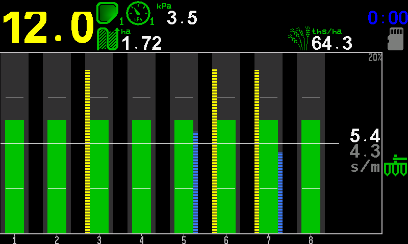

The screens
The home screen
What every part of the home screen is — speed, indicators, area, rates, the section diagrams — on a drill standing still and on a planter at work.
The home screen is the main working screen. It shows the diagrams of the section control sensors, the state indicators of the devices and the key figures of the work. What it shows follows the profile: every group of sensors and devices entered there gets its tiles, its columns, its rate field.
A grain drill with seed and fertilizer

- Travel speed. In km/h. Messages about the speed replace the figure. Speed
- Hoppers. One icon per hopper sensor, numbered. Red — the level is below the sensor. Hopper
- Metering units. Rotation of the dispenser shafts; the icon turns while the shaft turns. Metering unit
- Engine sensors. Oil pressure, battery charge and ignition of the fan-drive engine. Engine sensors
- Clock. The time of day; the slot also carries messages. Clock
- Memory card. Shown while a microSD card is in the slot. Memory card
- Fan. The fan icon and its speed in rpm. Fan
- Markers. Which marker arm is down. Markers
- Tramline bout. The current bout over the number of bouts in the rhythm. Tramline bout
- Area. Hectares treated on the active field. Area
- Product rate by weight. The rate of product 1, in kg/ha. Product rate by weight
- Seed diagram. One column per seed sensor; the white line is the control line. The section diagram
- Section numbers. The number of each section, under its column.
- Rate field. Measured rate on top, target below, in seeds per second here. Change the target rate
- Implement position. Here a red × — the work position sensor does not answer. Implement position
- Fertilizer diagram. Sections 25 to 36, with their own rate field in fertilizer units per second.
- Actuator failure. At least one motor or tramline actuator is in an alarm state. Actuator failure
A planter at work

- Travel speed. Yellow here, because it is simulated on the bench. Speed
- Hopper. Green — product above the sensor.
- Pressure. Vacuum or positive pressure in kPa. Pressure
- Area. Hectares treated on the active field.
- Population. The actual seeding rate in thousands of seeds per hectare. Population
- Memory card.
- Section column. Green — the row sows within its tolerance. Column colours
- Skips bar. Yellow hatching on the left of a column: the share of skips in that row.
- Doubles bar. Blue hatching on the right of a column: the share of doubles.
- Rate line. The target rate across all rows.
- Tolerance ticks. Upper and lower limit of the permitted deviation, in every column.
- Rate field. Measured seeds per metre on top, target below.
- Implement position. Green — lowered, in work.
- Section numbers.
What each indicator means in all its states is in Indicators; the diagram itself — line, ticks, colours — in The section diagram.
What you can do from the home screen
| To do this | Do this |
|---|---|
| Open the main menu | “MENU”, or tap with two fingers |
| Change the target rate | “PLUS” / “MINUS” — Change the target rate |
| Lock or unlock product application | Hold “HOME” — Lock application by hand |
| Open the tramline bout menu | “BACK” — Next tramline bout |
| Let the panel set the alarm level | Double tap, while applying — Set the alarm level |
| Open the settings of a device | Touch and hold its icon or column |
| Go to the next working screen | “HOME”, or swipe left — Working screens |
| Open the second home screen | Swipe right — Second home screen |
All buttons on all screens: Buttons and gestures.
Something your machine does that this page does not answer? Write to support@agriwelt.com — an engineer answers.